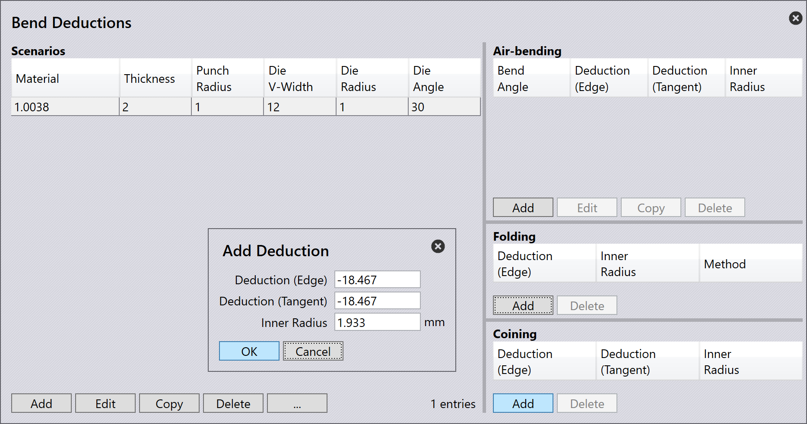

Αφαιρέσεις κάμψης
Οι αφαιρέσεις κάμψης χρησιμοποιούνται για τον υπολογισμό του αναπτυγμένου μήκους[1] ενός εξαρτήματος φύλλου μετάλλου. Απαιτείται για την ακριβή παραγωγή εξαρτημάτων με τις σωστές διαστάσεις μετά από κάμψη.
Οι αφαιρέσεις κάμψης λαμβάνουν υπόψη το τέντωμα και τη συμπίεση του υλικού που συμβαίνει κατά τη διαδι κασία κάμψης. Χρησιμοποιώντας αφαιρέσεις κάμψης, το TecZone Bend μπορεί να προσαρμόσει το μήκος του επίπεδου μοτίβου για να διασφαλίσει ότι το τελικό κεκαμμένο εξάρτημα πληροί τις καθορισμένες διαστάσεις.
Οι αφαιρέσεις κάμψης μπορεί να ποικίλλουν βάσει παραγόντων όπως ο τύπος υλικού, το πάχος, η ακτίνα κάμψης και η μέθοδος κάμψης.
Όταν ένα 3D εξάρτημα εισάγεται στο TecZone Bend, το λογισμικό υπολογίζει αυτόματα τις αφαιρέσεις κάμψης με βάση τη γεωμετρία του εξαρτήματος και τις ιδιότητες του υλικού. Μπορείτε επίσης να προσαρμόσετε χειροκίνητα τις αφαιρέσεις κάμψης εάν χρειάζεται για να ρυθμίσετε λεπτομερώς το επίπεδο μήκος μοτίβου.
Ρυθμίσεις αφαίρεσης κάμψης
Οι προσαρμοσμένες αφαιρέσεις κάμψης μπορούν να ρυθμιστούν στη βάση δεδομένων Αφαιρέσεις Κάμψης. Για πρόσβαση, κάντε κλικ στο εικονίδιο database και επιλέξτε Bend Deductions.

Μπορείτε να Add ένα νέο σενάριο αφαίρεσης κάμψης ή να επιλέξετε ένα υπάρχον σενάριο για να το Edit ή να το Delete. Μπορείτε επίσης να Copy ένα υπάρχον σενάριο για να δημιουργήσετε ένα νέο με παρόμοιες ρυθμίσεις.

Κάντε κλικ Add για να δημιουργήσετε ένα νέο σενάριο αφαίρεσης κάμψης. Επιλέξτε και πληκτρολογήστε τις ακόλουθες παραμέτρους:
-
Material: Επιλέξτε το υλικό για το οποίο ισχύουν οι αφαιρέσεις κάμψης.
-
Thickness: Ορίστε το πάχος του φύλλου για το οποίο ισχύουν οι αφαιρέσεις κάμψης.
-
Punch radius: Ορίστε την ακτίνα του άνω εργαλείου για την οποία ισχύουν οι αφαιρέσεις κάμψης.
-
V-width type: Επιλέξτε τον τύπο μέτρησης πλάτους V που χρησιμοποιείται.
-
Die V-width: Ορίστε το πλάτος του κάτω εργαλείου για το οποίο ισχύουν οι αφαιρέσεις κάμψης.
-
Die radius: Ορίστε την ακτίνα του κάτω εργαλείου για την οποία ισχύουν οι αφαιρέσεις κάμψης.
-
Die angle: Ορίστε τη γωνία του κάτω εργαλείου για την οποία ισχύουν οι αφαιρέσεις κάμψης.
Κάντε κλικ στο OK για να αποθηκεύσετε το νέο σενάριο.
Επιπλέον, επιλέξτε ένα σενάριο αφαίρεσης κάμψης και κάντε κλικ στην επιλογή … για να δείτε περαιτέρω επιλογές:

-
Graph: Εμφανίζει ένα γράφημα που δείχνει τη σχέση μεταξύ γωνίας κάμψης και αφαίρεσης κάμψης. Αυτή η οπτική αναπαράσταση βοηθά στην κατανόηση του πώς οι αφαιρέσεις κάμψης αλλάζουν με διαφορετικές γωνίες κάμψης. Μετακινήστε τον κέρσορα πάνω από τις blue και red γραμμές του γραφήματος για να δείτε συγκεκριμένες τιμές.

-
Import: Σας επιτρέπει να εισαγάγετε δεδομένα αφαίρεσης κάμψης από ένα εξωτερικό αρχείο CSV.
-
Export: Σας δίνει τη δυνατότητα να εξαγάγετε τα τρέχοντα δεδομένα αφαίρεσης κάμψης σε αρχείο CSV για αντίγραφα ασφαλείας ή για σκοπούς κοινής χρήσης.
-
3rd party: Παρέχει επιλογές για την εισαγωγή δεδομένων αφαίρεσης κάμψης από λογισμικό τρίτων ή πηγές.
Τύποι αφαίρεσης κάμψης
Το TecZone Bend υποστηρίζει τρεις τύπους αφαιρέσεων κάμψης: Air Bending, Folding και Coining.
Κάθε τύπος έχει το δικό του σύνολο παραμέτρων και υπολογισμών για να καθορίσει με ακρίβεια τις αφαιρέσεις κάμψης με βάση τη μέθοδο κάμψης που χρησιμοποιείται.
Air Bending
Η αερο-κάμψη είναι μια κοινή μέθοδος κάμψης όπου το φύλλο μετάλλου κάμπτεται χρησιμοποιώντας ένα γρόνθο και μήτρα χωρίς να κλείνει πλήρως η μήτρα. Αυτή η μέθοδος επιτρέπει μεγαλύτερη ευελιξία και είναι κατάλληλη για ένα ευρύ φάσμα υλικών και παχών.
Για να προσθέσετε αφαιρέσεις κάμψης για αερο-κάμψη, επιλέξτε ένα κατάλληλο σενάριο από τη βάση δεδομένων Αφαιρέσεις Κάμψης. Κάντε κλικ Add για να δημιουργήσετε ένα νέο σενάριο αφαίρεσης αερο-κάμψης και πληκτρολογήστε τη Bend Angle.

Καθώς εισάγετε τη γωνία κάμψης, οι αντίστοιχες τιμές Deduction (Edge), Deduction (Tangent) και Inner Radius θα υπολογιστούν και θα εμφανιστούν.
Κάντε κλικ στο OK για να αποθηκεύσετε τη νέα αφαίρεση αερο-κάμψης.
Folding
Η δίπλωση ή Hemming είναι μια μέθοδος κάμψης όπου το φύλλο μετάλλου κάμπτεται χρησιμοποιώντας ένα γρόνθο και μήτρα που κλείνει πλήρως, δημιουργώντας μια απότομη κάμψη. Αυτή η μέθοδος χρησιμοποιείται συχνά για λεπτότερα υλικά και απαιτεί ακριβή έλεγχο των αφαιρέσεων κάμψης.

Για να προσθέσετε αφαιρέσεις κάμψης για δίπλωση, επιλέξτε ένα κατάλληλο σενάριο από τη βάση δεδομένων Αφαιρέσεις Κάμψης. Κάντε κλικ Add για να δημιουργήσετε ένα νέο σενάριο αφαίρεσης δίπλωσης και επιλέξτε τη Hemming method.
Κάντε κλικ στο OK για να αποθηκεύσετε τη νέα αφαίρεση δίπλωσης.
Coining
Το Coining είναι μια μέθοδος κάμψης όπου το φύλλο μετάλλου πιέζεται μεταξύ ενός γρόνθου και μήτρας με υψηλή πίεση, με αποτέλεσμα μια ακριβή και απότομη κάμψη. Αυτή η μέθοδος χρησιμοποιείται συνήθως για παχύτερα υλικά και απαιτεί ακριβείς αφαιρέσεις κάμψης.

Για να προσθέσετε αφαιρέσεις κάμψης για coining, επιλέξτε ένα κατάλληλο σενάριο από τη βάση δεδομένων Αφαιρέσεις Κάμψης. Κάντε κλικ Add για να δημιουργήσετε ένα νέο σενάριο αφαίρεσης coining.
Κάντε κλικ στο OK για να αποθηκεύσετε τη νέα αφαίρεση coining.